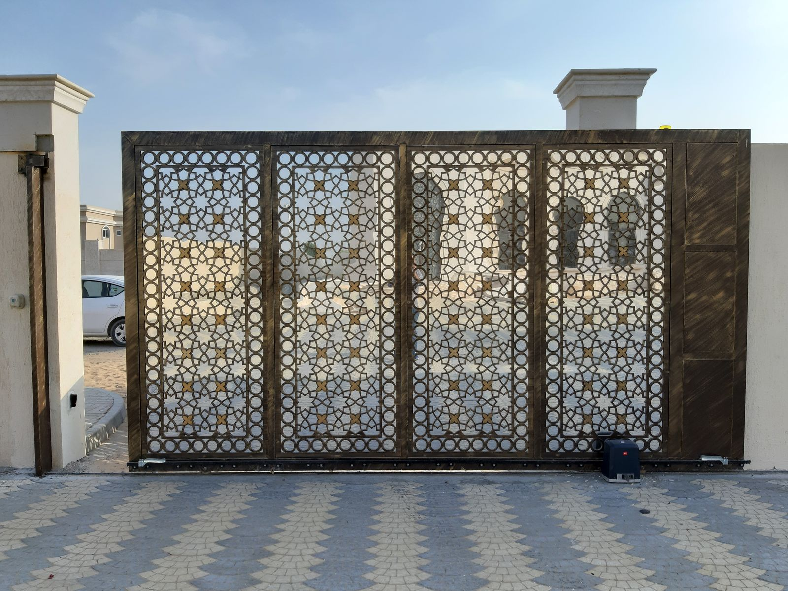

Sliding gates
New sliding gates, fully installed
A sliding gate runs along a steel track beside your wall, so it needs no space in front of it to open. It is the most popular choice for driveways, and a good fit for complexes and business entrances.
What we do
- Measure the opening and quote
- Supply the gate in the design you choose
- Concrete footing and steel track
- Wheels, guide rollers and end stops
- Motor, rack, remotes and safety beams
Repairs
- Gates that jump off the track
- Worn wheels and rollers
- Bent or lifted tracks
- Anti lift brackets fitted